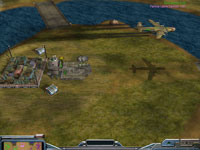
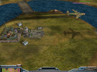

 Download this map for Generals Zero Hour
This is a quite large (450x450) size 6-player map, excellent for 3 vs 3 or 2 vs 3/4.
This map consists of desert plateaues, separated by mountain ridges and a savanna that runs in the middle from east to west. No matter where you start, there are several options for expanding your base. Expanding is wise since there are lots of supplies and tech buildings around the map. There are also good opportunities for defending these hot spost, not only from bunkers or towers but also from high ground. The center of the map holds even more goodies.
This map boasts a total of 20 supply docks, 40 supply piles, 8 oil derricks, 8 artillery platforms, 4 oil refineries, 2 reinforcement pads, and 1 hospital! Add 4 money crates for the early explorer. Each base plateau holds one supply dock and there are two or three more docks near your starting position. If you don't make use of this smörgåsbord, your opponents will not hesitate!
Works great! No choke points.